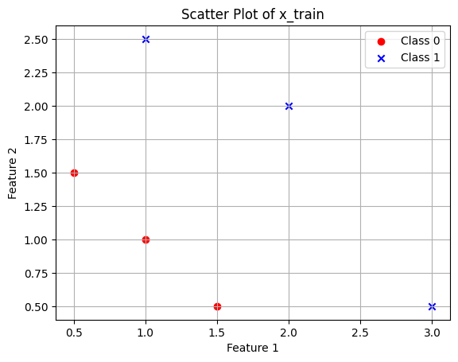
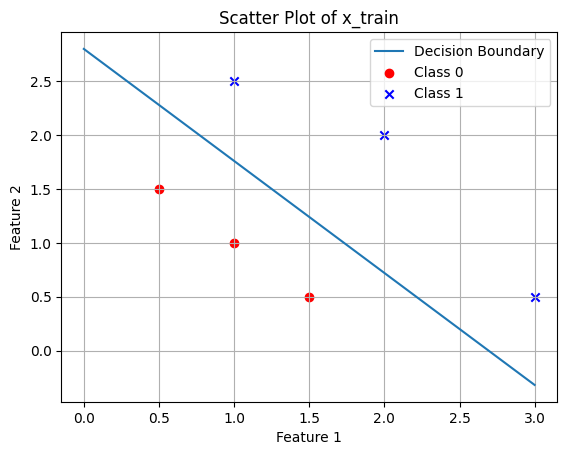
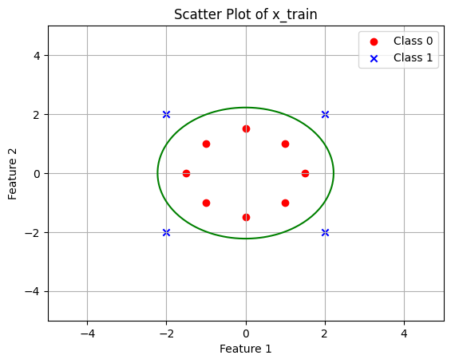
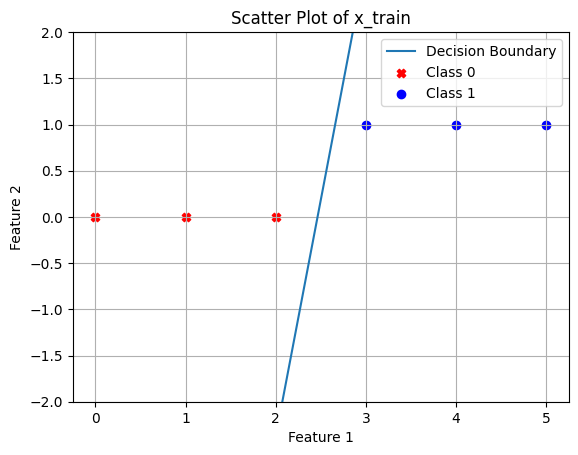

import numpy as np
def cost_func(x,y,w,b):
cost = 0
n_points = y.shape[0]
for i in range(n_points):
f = 1/(1 + np.exp(-1*(np.dot(w,x[i])+b))) # Sigmoid function
cost += (-y[i]*np.log(f)-(1-y[i])*np.log(1-f))
cost = cost/(n_points)
return cost##Logistic Regression The following describes in detail the algorithm of Logistic Regression for mltiple features represented by the vector x.
Suppose x0 and x1 are 2 fearutes that define whether the element belongs to class 0 or class 1, we can use logistic regression to define a boundary between the 2 classes.
###Cost Function
###Derivative Function
def derivative_func(x,y,w,b):
n_points = y.shape[0]
n_features = x[0].shape[0]
dw = np.zeros(n_features) # Dont use [0]*n_features, as then the datatype becomes int and it truncates every element up to the decimal, do dw[i] is always 0
db = 0
for i in range(n_points):
f = 1/(1 + np.exp(-1*(np.dot(w,x[i])+b))) # Sigmoid function
for j in range(n_features):
dw[j] += (f - y[i])*x[i][j]/n_points
db += (f - y[i])/n_points
return dw, dbx_train = np.array([[0.5, 1.5], [1,1], [1.5, 0.5], [3, 0.5], [2, 2], [1, 2.5]])
y_train = np.array([0, 0, 0, 1, 1, 1])
w = np.array([2.,3.])
b = 1.
dw,db = derivative_func(x_train, y_train, w, b)
print(dw, db)[0.49833339 0.49883943] 0.49861806546328574###Gradient Descent Function
def grad_desc(x,y,w,b,a,n,derivative_func, cost_func):
cost_arr = []
for i in range(n):
dw,db = derivative_func(x,y,w,b)
w = w - a * dw
b = b - a * db
cost = cost_func(x,y,w,b)
cost_arr.append(cost)
if(i%10000==0 or i==n-1):
print("iteration:",i+1,"w:", w,"b:", b, "cost:", cost)
return w, b, cost, cost_arr###Implementation
import numpy as np
x_train = np.array([[0.5, 1.5], [1,1], [1.5, 0.5], [3, 0.5], [2, 2], [1, 2.5]])
y_train = np.array([0, 0, 0, 1, 1, 1])
w = np.array([0,0])
b = 0
a = 0.01
n = 100000import matplotlib.pyplot as plt
class_0_points = x_train[y_train == 0]
class_1_points = x_train[y_train == 1]
plt.scatter(class_0_points[:, 0], class_0_points[:, 1], c='red', marker='o', label='Class 0')
plt.scatter(class_1_points[:, 0], class_1_points[:, 1], c='blue', marker='x', label='Class 1')
plt.xlabel('Feature 1')
plt.ylabel('Feature 2')
plt.title('Scatter Plot of x_train')
plt.legend()
plt.grid(True)
plt.show()
###Result of the model
w,b,cost,cost_arr = grad_desc(x_train, y_train, w, b, a, n, derivative_func, cost_func)iteration: 1 w: [0.0025 0.00166667] b: -2.7755575615628914e-19 cost: 0.6922493145189493
iteration: 10001 w: [2.30405443 2.07569485] b: -5.906224646656873 cost: 0.15929433526969025
iteration: 20001 w: [3.15399029 2.9391181 ] b: -8.308406449661286 cost: 0.08467022766207012
iteration: 30001 w: [3.68009634 3.47013631] b: -9.779995117023205 cost: 0.05708873095289405
iteration: 40001 w: [4.05958107 3.85211168] b: -10.836781277572722 cost: 0.042929169405013574
iteration: 50001 w: [4.35591528 4.14993563] b: -11.659973341953908 cost: 0.03435304388535467
iteration: 60001 w: [4.59881057 4.3938154 ] b: -12.333644748840326 cost: 0.02861432636904086
iteration: 70001 w: [4.80451141 4.60021177] b: -12.903521835706426 cost: 0.02450955388769534
iteration: 80001 w: [4.98285153 4.77906746] b: -13.39718959763814 cost: 0.02142997830044766
iteration: 90001 w: [5.14022947 4.93684162] b: -13.832552219301215 cost: 0.019035206450251734
iteration: 100000 w: [5.28102582 5.07795116] b: -14.22184473980357 cost: 0.017120404762803472##Plotting the decision boundary
x0 = np.arange(0,3,0.001)
x1 = (-b-w[0]*x0)/w[1] # This is the decision boundary
plt.plot(x0,x1,label='Decision Boundary')
plt.scatter(class_0_points[:, 0], class_0_points[:, 1], c='red', marker='o', label='Class 0')
plt.scatter(class_1_points[:, 0], class_1_points[:, 1], c='blue', marker='x', label='Class 1')
plt.xlabel('Feature 1')
plt.ylabel('Feature 2')
plt.title('Scatter Plot of x_train')
plt.legend()
plt.grid(True)
plt.show()
##Non-linear decision boundary
Now we try to modify the decision boundary to: w0.x + w1.y + w3.x^2 + w4.y^2 + b = 0
import numpy as np
x_train = np.array([[1, 1], [1, -1], [-1, 1], [-1, -1], [1.5, 0], [-1.5, 0], [0, 1.5], [0, -1.5], [2, 2], [2, -2], [-2, 2], [-2, -2]])
# Calculate the squares of each element in x_train
squared_x_train = np.square(x_train)
# Concatenate the squared values to each sub-array in x_train
x_train_with_squares = np.concatenate((x_train, squared_x_train), axis=1)
print(x_train_with_squares)[[ 1. 1. 1. 1. ]
[ 1. -1. 1. 1. ]
[-1. 1. 1. 1. ]
[-1. -1. 1. 1. ]
[ 1.5 0. 2.25 0. ]
[-1.5 0. 2.25 0. ]
[ 0. 1.5 0. 2.25]
[ 0. -1.5 0. 2.25]
[ 2. 2. 4. 4. ]
[ 2. -2. 4. 4. ]
[-2. 2. 4. 4. ]
[-2. -2. 4. 4. ]]y_train = np.array([0, 0, 0, 0, 0,0 ,0,0,1, 1, 1,1])
w = np.array([1,1,1,1])
b = 0
a = 0.01
n = 100000
w,b,cost,cost_arr = grad_desc(x_train_with_squares, y_train, w, b, a, n, derivative_func, cost_func)iteration: 1 w: [0.99919605 0.99919605 0.99425383 0.99425383] b: -0.005447789625105651 cost: 1.5573300591796866
iteration: 10001 w: [8.41475138e-07 8.41475138e-07 1.18908181e+00 1.18908181e+00] b: -5.765043873820958 cost: 0.03368980146703054
iteration: 20001 w: [1.64239739e-08 1.64239739e-08 1.43071179e+00 1.43071179e+00] b: -6.99571255551648 cost: 0.016713393167275607
iteration: 30001 w: [1.60833801e-09 1.60833801e-09 1.57187128e+00 1.57187128e+00] b: -7.713800697151975 cost: 0.01108075752914621
iteration: 40001 w: [3.08300777e-10 3.08300776e-10 1.67177372e+00 1.67177372e+00] b: -8.22180568788111 cost: 0.008280933527407662
iteration: 50001 w: [8.55363287e-11 8.55363287e-11 1.74910732e+00 1.74910732e+00] b: -8.614974938292368 cost: 0.006608482664955559
iteration: 60001 w: [2.99969234e-11 2.99969233e-11 1.81219413e+00 1.81219413e+00] b: -8.935681550129729 cost: 0.0054972447093098
iteration: 70001 w: [1.23672660e-11 1.23672660e-11 1.86546702e+00 1.86546702e+00] b: -9.206484123204053 cost: 0.00470556144631653
iteration: 80001 w: [5.74014117e-12 5.74014108e-12 1.91156787e+00 1.91156787e+00] b: -9.440822251578682 cost: 0.0041130242660977045
iteration: 90001 w: [2.91658887e-12 2.91658881e-12 1.95219819e+00 1.95219819e+00] b: -9.647349774128628 cost: 0.0036529359870781514
iteration: 100000 w: [1.59167870e-12 1.59167867e-12 1.98851473e+00 1.98851473e+00] b: -9.831948965175554 cost: 0.0032854109483625386w[0] and w[1] tend to 0, this means that there is very little contribution from them (we can also remove those terms).
class_0_points = x_train[y_train == 0]
class_1_points = x_train[y_train == 1]
plt.scatter(class_0_points[:, 0], class_0_points[:, 1], c='red', marker='o', label='Class 0')
plt.scatter(class_1_points[:, 0], class_1_points[:, 1], c='blue', marker='x', label='Class 1')
w0, w1, w3, w4 = w
x = np.linspace(-5, 5, 100)
y = np.linspace(-5, 5, 100)
X, Y = np.meshgrid(x, y)
Z = w0 * X + w1 * Y + w3 * X**2 + w4 * Y**2 + b
plt.contour(X, Y, Z, levels=[0], colors='g', label="Decision boundary")
plt.xlabel('Feature 1')
plt.ylabel('Feature 2')
plt.title('Scatter Plot of x_train')
plt.legend()
plt.grid(True)
plt.show()UserWarning: The following kwargs were not used by contour: 'label'
plt.contour(X, Y, Z, levels=[0], colors='g', label="Decision boundary")
##Another example
def derivative_func(x,y,w,b):
n_points = y.shape[0]
n_features = x.shape[0]
dw = 0 # Dont use [0]*n_features, as then the datatype becomes int and it truncates every element up to the decimal, do dw[i] is always 0
db = 0
for i in range(n_points):
f = 1/(1 + np.exp(-1*(np.dot(w,x[i])+b))) # Sigmoid function
dw += (f - y[i])*x[i]/n_points
db += (f - y[i])/n_points
return dw, db
import numpy as np
x_train = np.array([0. ,1. ,2. ,3. ,4. ,5.])
y_train = np.array([0., 0., 0., 1., 1., 1.])
w = 0.
b = 0
a = 0.01
n = 100000
w,b,cost,cost_arr = grad_desc(x_train, y_train, w, b, a, n, derivative_func, cost_func)iteration: 1 w: 0.0075 b: -2.7755575615628914e-19 cost: 0.6875866309962527
iteration: 10001 w: 2.1867501108184713 b: -5.16917809323396 cost: 0.11340307961302272
iteration: 20001 w: 2.861115544430589 b: -6.907170232585448 cost: 0.07798162891279302
iteration: 30001 w: 3.3342040584439254 b: -8.111040905678628 cost: 0.061142541357167964
iteration: 40001 w: 3.7092655036875835 b: -9.060256188655838 cost: 0.05069045939178313
iteration: 50001 w: 4.023241491259317 b: -9.852492089866404 cost: 0.04341259172881062
iteration: 60001 w: 4.294480337340172 b: -10.535609693427636 cost: 0.038002132335623905
iteration: 70001 w: 4.533744351000855 b: -11.137432454212933 cost: 0.033802915742773575
iteration: 80001 w: 4.748012696977043 b: -11.675891049855071 cost: 0.030441380223630285
iteration: 90001 w: 4.942123793732626 b: -12.163359911131781 cost: 0.027686301223508947
iteration: 100000 w: 5.119578248398071 b: -12.608762220986433 cost: 0.025385931832151234x = np.arange(0,3,0.001)
y = w*x + b # This is the decision boundary
plt.plot(x,y,label='Decision Boundary')
class_0_points = x_train[y_train == 0]
class_1_points = x_train[y_train == 1]
plt.scatter(class_0_points,y_train[0:3], c='red', marker='X', label='Class 0')
plt.scatter(class_1_points,y_train[3:], c='blue', marker='o', label='Class 1')
plt.xlabel('Feature 1')
plt.ylabel('Feature 2')
plt.title('Scatter Plot of x_train')
plt.ylim([-2,2])
plt.legend()
plt.grid(True)
plt.show()
##We can further refine the learning rate as in my gradient descent google colab